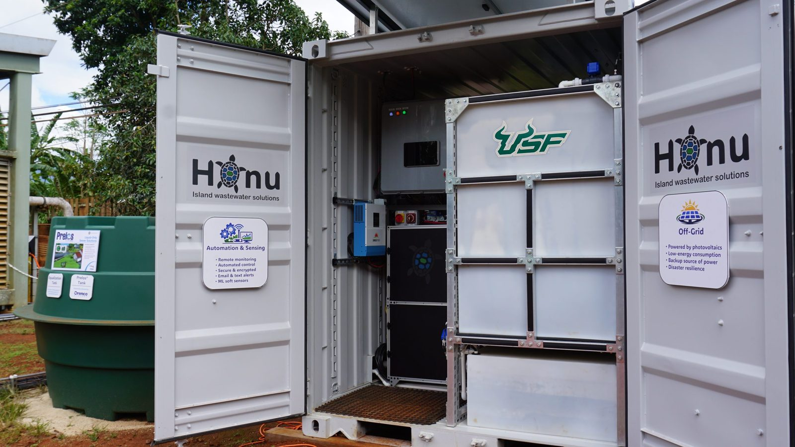

Honu Hub: Smart Onsite Water Recycling
The Honu Hub is a solar-powered, off-grid onsite wastewater recycling system with nitrogen removal, automation, and remote monitoring, designed for island communities. I built its data logging, remote monitoring, and control system: a Raspberry Pi logs data and serves as a custom HMI for the PLC, with secure real-time remote access for troubleshooting. Monitoring transmembrane pressure and flux in real time lets us adjust membrane backwash before fouling becomes permanent. I am now integrating machine learning into the system's design and monitoring. USF Engineering story.